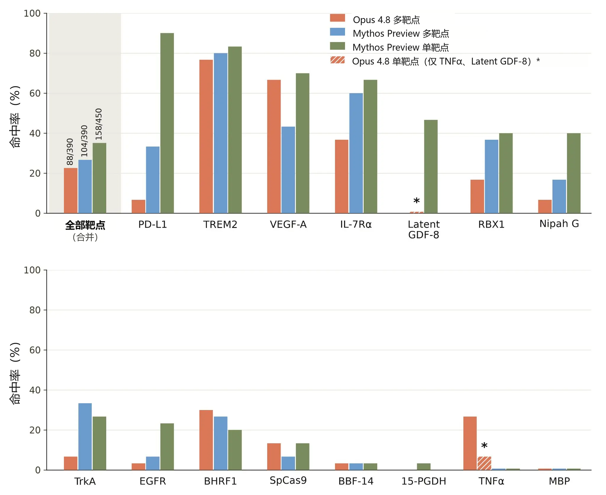
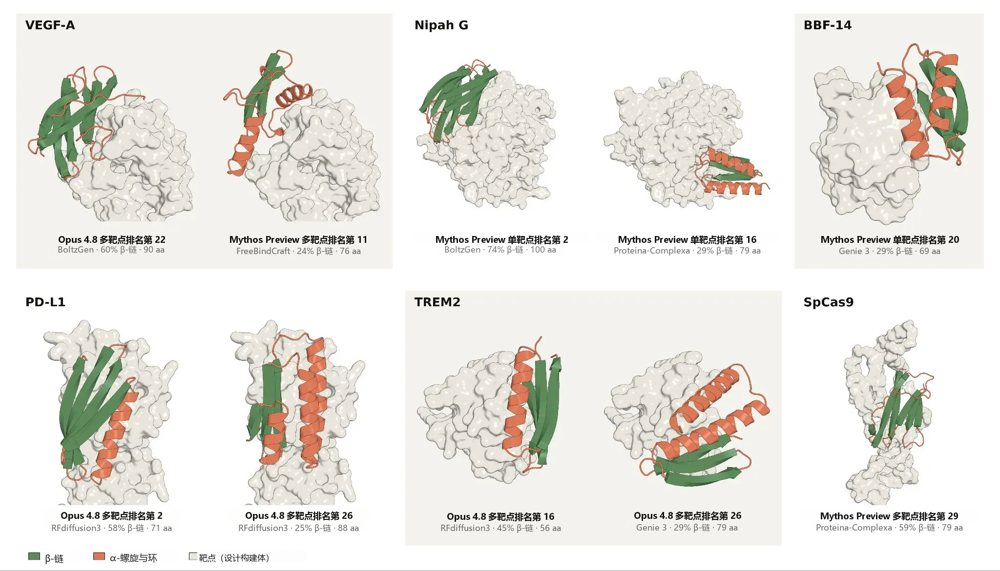
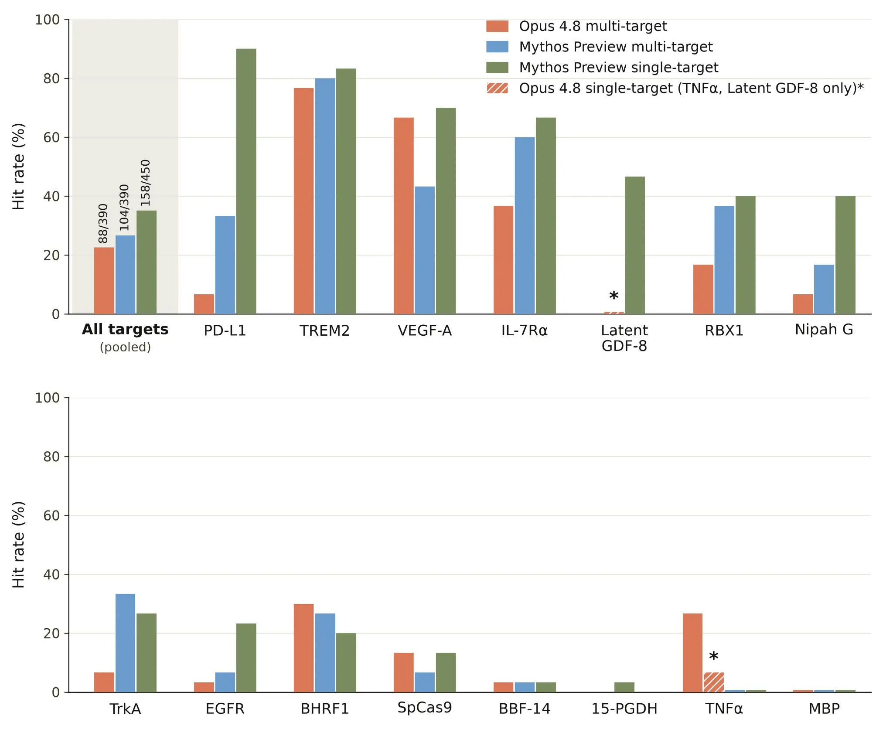
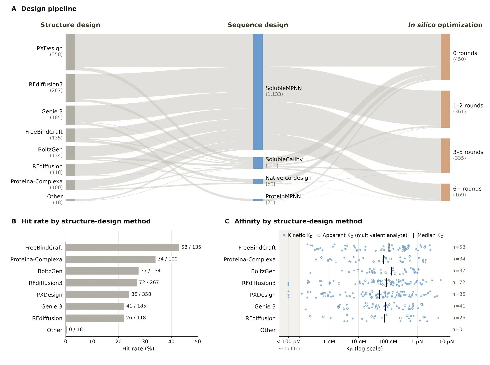
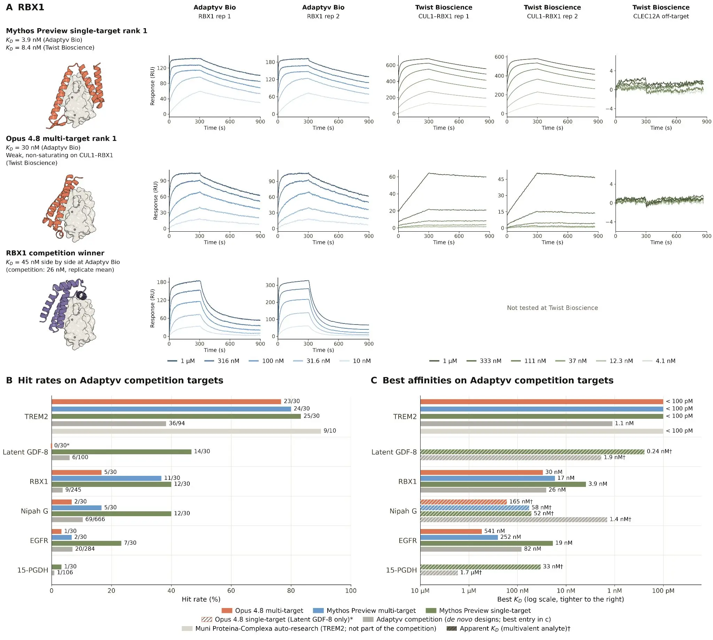
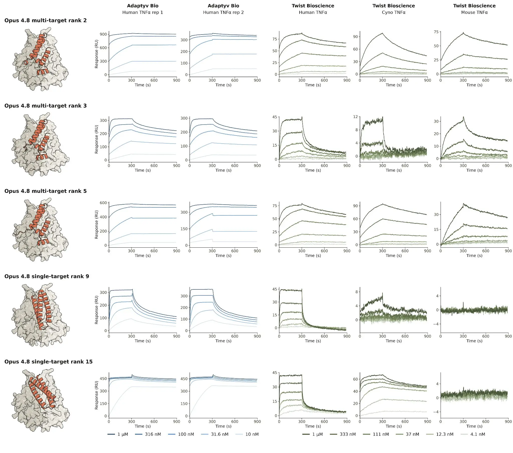
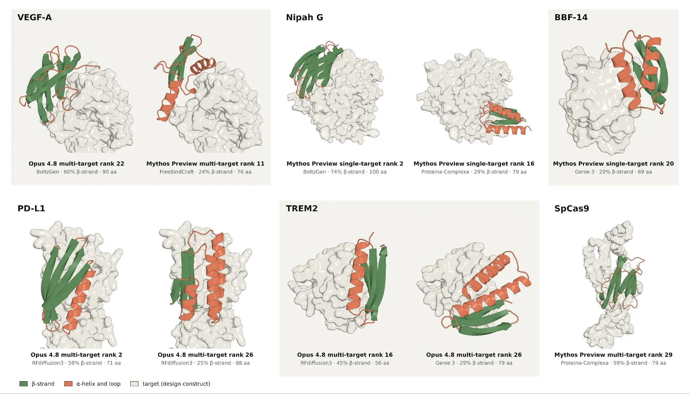
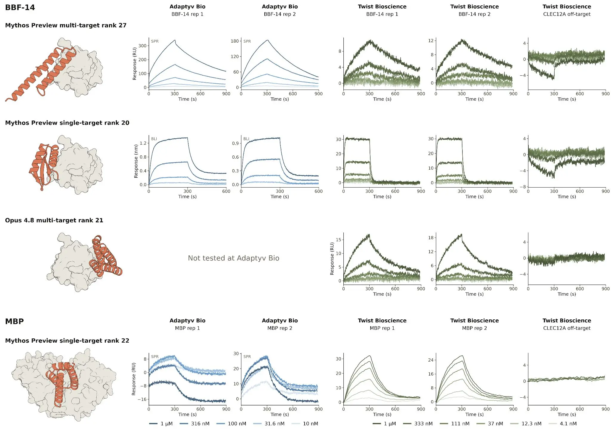
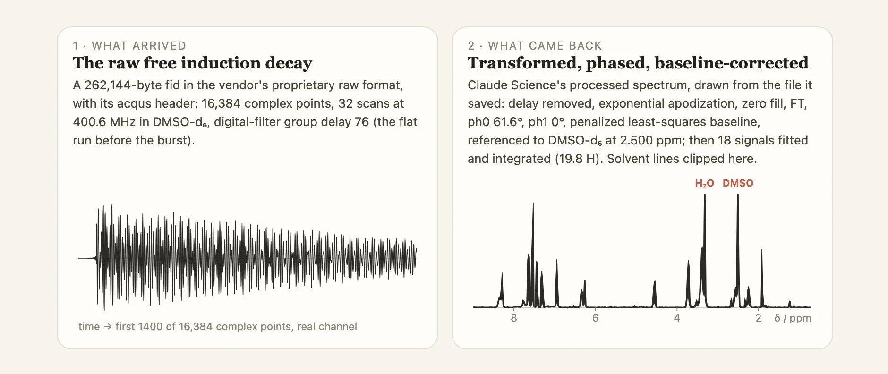
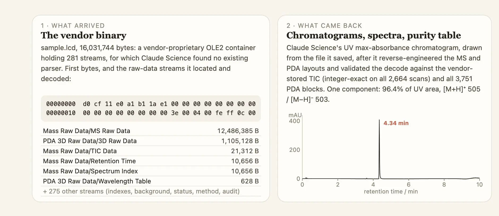

Claude加速蛋白质设计与分析化学
📖 中文摘要
专业术语注解
蛋白结合子（binder）：能紧密附着靶标蛋白的小蛋白，多数药物借此起效de novo设计：从零开始计算设计全新蛋白质命中率：设计产物中真正能结合靶标的比例湿实验验证：在真实实验室物理测试计算结果分析化学：用NMR、LC-MS等手段判定化合物身份与纯度📄 中文全文
- 分类： 科学（Science）
- 来源： https://www.anthropic.com/research/Claude-accelerates-protein-design
科学（Science） 2026 年 8 月 18 日 摘要： 在这篇文章中，我们分享两项结果，展示 Claude 如何帮助生命科学研究人员加快研究节奏。第一项中，我们测试了 Claude 从头设计蛋白质结合体（protein binders）的能力——这是药物设计流程早期阶段的一项关键任务，历史上每位靶点专家都要耗费数周乃至数月。Claude（Mythos Preview 与 Opus 4.8）针对 15 个靶点设计了蛋白质结合体，其中 14 个成功。根据设置不同，其单个设计的结合成功率在 22% 到 35% 之间，而当今蛋白质设计项目中的典型水平为 10–15%。它一些最强的设计结合紧密度达到此前已发表最佳结果的数倍。第二项示例中，我们评估了 Claude 能否加速化学分析。已普遍可用的模型 Claude Opus 5 被提供了 NMR 与 LC-MS 数据（这类数据让化学家能够评估其所用化合物的身份与纯度）。在仅提供一家合同实验室的原始文件和一句两句话的提示下，Claude 在 23 分钟和 19 分钟内返回了成品结果，在氢原子计数和纯度上与该实验室自身的分析一致（96.4% 对 96.33%）。这些示例展示了 Claude 如何减少推进复杂科学任务当前所需的时间与计算专业知识。
过去几个月，AI 驱动发现的步伐已经加快。这些发现大多出现在验证相对较快的领域。例如，在数学领域，智能体已开始着手攻克未解问题：几十年来悬而未决的 Erdős 问题 正以每月数个的速度被攻克，而我们最近也分享了 Claude 如何改进了与 黎曼 zeta 函数 相关的长期下界。
AI 模型也开始加速那些验证结果更复杂、更昂贵的实验领域（如生命科学）的进展。在这篇文章中，我们分享两项关于 Claude 科学能力的实验结果。首先，我们呈现对 Claude 在蛋白质设计项目中表现的研究发现，表明 Claude 能够设计出与（甚至优于）顶尖人类专家相当的多靶点蛋白质结合体。其次，我们分享 Claude Opus 5 在分析化学任务上的表现，展示通用访问模型如何支撑研究中常规且耗时的环节。
下文描述的蛋白质设计与分析化学任务，代表了药物开发流程早期某些阶段工作的典型部分。加速这些阶段是我们更大规模的端到端加速药物开发努力的组成部分，而其中许多方面与政策及运营瓶颈的关系，大于核心科学能力的提升。
我们今天分享的结果，是通过我们的 Mythos 与 Opus 模型组合取得的。尽管生命科学的研究任务在我们能力最强的模型上目前受到限制，但我们的最高优先级之一是为科学家启动一项访问计划，我们预计很快会就此分享更多信息。与此同时，Opus 5 仍是我们能力最强、普遍可用的模型。
Claude 设计蛋白质
当我们发布 Claude Mythos 5 时，我们曾分享正在尝试用该模型加速药物设计流程的某些环节。作为这项工作的持续推进，我们一直在研究 Claude 为多个蛋白质靶点设计微型结合体（minibinders）的能力。微型结合体是一种被设计来紧紧扣住目标蛋白的小型蛋白质。结合是现代大部分药物发挥作用的方式：它们附着于靶点，并抑制、激活或向其递送某种物质。设计一种新的结合体（即所谓的 de novo 设计）在历史上每个靶点都需要蛋白质工程师数月的算力、优化与筛选。
近年来，能够设计蛋白质并对哪些最有可能结合进行排序的机器学习模型，大大加快了蛋白质设计流程。但这些模型通常仍需要计算专家进行数天（往往数周）费力的人工编排。尽管像 Claude 这样的通用推理模型能帮助专家和非专家更高效地进行蛋白质的计算设计，但在湿实验室中验证这些数据（科学家在其中实际测试化学品、药物及其他生物物质）仍需数周。
我们现在已收到其中首个实验的湿实验室数据——一项针对 15 个靶点、使用 Claude Opus 4.8 与 Mythos Preview 的多臂蛋白质设计项目。我们的外部评估方 Adaptyv Bio 与 Twist Bioscience 在实验室中独立生成并测试了 Claude 的设计，发现在我们所针对的 15 个靶点中，Claude 成功为其中 14 个设计了结合体。其中包括针对至少 6 个靶点的高亲和力结合体1，以及亲和力达到或超过此前报道最佳水平的结合体（针对至少 4 个靶点）。亲和力衡量的是蛋白质与其靶点结合的强度；高亲和力结合体通常是产生治疗效果所必需的，因为它们能让药物在低剂量下生效，从而降低副作用风险与制造成本。
Mythos Preview 与 Opus 4.8 在 48 小时会话中同时针对所有靶点设计时，分别取得了 26.7% 与 22.6% 的整体命中率（即设计中有多少确实成为结合体）。当今蛋白质设计项目中的典型水平为 10% 到 15%。2
在评估了 Claude 针对多个靶点的设计能力后，我们想了解让它一次专注于单个靶点能否提升表现，尤其是考虑到这更能代表蛋白质工程师通常采取的方法。事实的确如此：我们发现 Mythos Preview 在使用多个 24 小时会话、分别针对每个靶点进行设计时，取得了 35.1% 的整体命中率。

Mythos Preview 与 Opus 4.8 在一组 15 个靶点上取得了超过 20% 的命中率，靶点层面的命中率最高达 90%，最低为 0%。该项目在除我们初始提示提供给 Claude 的信息之外，几乎无人介入3（链接）。我们预期，在专家蛋白质设计者手中，这种方法会产出更强的结果，尤其是如果他们就中间结果向 Claude 提供积极的指引与反馈。
项目设计
我们启动蛋白质设计项目时，选取了多个蛋白质设计基准中常用的靶点4，包括 Adaptyv Bio 的全部 BenchBB。由于这些靶点已被广泛研究，我们可以将结果与已发表的命中率和亲和力进行对比。我们还从 Adaptyv Bio 最近的竞赛中选取了两个新颖靶点 15-PGDH 与 GDF-8，以确保 Claude 能够针对那些无法从其训练数据或在线搜索中调取已有成功记录的靶点进行设计（对所有靶点，我们都要求 Claude 检查并确保其设计为原创）。
随后，我们在 Claude Science 中提示 Claude 针对这些靶点设计蛋白质结合体。为此，我们采取了两种方式。第一种是多靶点模式，Claude 在单个 Claude Science 会话中同时针对所有靶点设计。第二种是单靶点模式，每个会话处理一个靶点，所有靶点的会话并行运行。
我们以多靶点模式运行 Opus 4.8 与 Mythos Preview，墙钟时间为 48 小时，并最多使用 12,500 个 NVIDIA H100 小时算力来运行专用的蛋白质设计与折叠模型。我们还以单靶点模式运行 Mythos Preview，每个靶点墙钟时间 24 小时，最多 2,500 个 NVIDIA H100 小时算力。5
为模拟典型蛋白质设计项目期间可用的资源，我们向 Claude 提供了以下内容： 1. 一份详尽的蛋白质设计提示6，同时也包含在智能体上下文中； 2. 访问互联网及一个资源语料库，如关于蛋白质设计的论文； 3. 连接 Google Drive、Slack、Gmail 与 BioRxiv 的接口； 4. 访问用于运行专用蛋白质设计与折叠模型的 GPU； 5. 在分配时间内对 token 与子智能体预算不设限制，并启用快速模式。
在向 Claude 给出提示后，我们让模型自主执行。在启动项目后，我们没有提供任何额外的科学、技术或运营指引。
我们唯一的参与是批准访问权限（如网络访问请求）以及监控基础设施以确保会话正常运行。Claude 完成了设计结合体所需的全部工作，而一名人类操作员完成这些可能要数周。它选择在每个蛋白质靶点的哪个位置进行设计；通过编排多个结构设计、序列设计与共折叠模型（这些模型在一次运算中预测蛋白质连同其结合对象的结构）来生成候选结构与序列；让设计经历多轮 in silico 优化；并从计算上筛选出能够表达、保持可溶并结合的新颖、多样的候选。
对于 15 个靶点中的每一个，我们都要求 Claude 设计 30 个蛋白质结合体。Claude 通过操作该领域已在使用的公开专用蛋白质设计与共折叠模型来完成此事。Claude 的设计随后被送往 Adaptyv Bio 与 Twist Bioscience 进行验证。
 Claude 成功编排多个开源蛋白质设计模型，生成具有高成功率与高亲和力的结合体。a) 桑基图描绘 Claude 对结构设计、序列设计与优化轮次的组合。b, c) Claude 为所有至少订购 100 个设计的结构设计方法，设计出命中率超过 20%（含高亲和力结合体）的结合体。
Claude 成功编排多个开源蛋白质设计模型，生成具有高成功率与高亲和力的结合体。a) 桑基图描绘 Claude 对结构设计、序列设计与优化轮次的组合。b, c) Claude 为所有至少订购 100 个设计的结构设计方法，设计出命中率超过 20%（含高亲和力结合体）的结合体。
Claude 在各靶点上的表现
到这一努力结束时，我们针对 15 个靶点中的 14 个产出了 354 个结合体，共使用 1,320 个设计。这对于公开可用的 de novo 蛋白质设计总库是一项重要贡献；例如，两个最大的集合 proteinbase.com 与由 Overath 等人 整理的集合，分别包含约 770 个结合体（出自针对 40 个靶点的 5,700 个设计）。下面，我们分享三个凸显 Claude 能力的示例，以及一个展示其局限性的示例。更多细节见于我们的技术报告（链接）。
Claude 的设计可与 Adaptyv Bio 蛋白质设计竞赛的参赛作品媲美
我们发现，对于 Adaptyv Bio 已举办竞赛的靶点，Claude 在命中率与亲和力上都达到或超越顶级参与者的水平。针对 RBX1（一种驱动特定调控蛋白靶向降解的小型蛋白），单靶点模式下的 Mythos Preview 取得了 40% 的命中率，而参与者的命中率为 3.7%。其排名最高的设计是一个高亲和力结合体，表现优于获奖设计——后者在提交的 245 个设计中。
 Claude 针对 RBX1 设计的结合体具有最先进的亲和力，并一贯超过 Adaptyv Bio 蛋白质设计竞赛中记录的命中率。
Claude 针对 RBX1 设计的结合体具有最先进的亲和力，并一贯超过 Adaptyv Bio 蛋白质设计竞赛中记录的命中率。
Claude 设计出针对 TNFα 的跨物种反应性结合体——一个具挑战性、与治疗相关的靶点
有趣的是，在 TNFα 上取得成功的是 Opus 4.8 而非 Mythos Preview——多个专家团队都曾在 TNFα 上受挫。TNFα 是一种由免疫系统释放、用于触发炎症的信号蛋白，阻断它是史上最具影响力药物（包括 Humira）的治疗基础。它是一个难以设计的靶点，因为其多聚体结构需要瞄准由两个蛋白质形成的凹槽中的结合位点。尽管 Mythos Preview 未成功，Opus 4.8 设计了多个结合体，其中包括一些跨物种起效的——结合人、食蟹猴和小鼠的 TNFα，这对开展动物研究十分重要。我们不确定为何 Opus 4.8 在此靶点上成功而 Mythos Preview 没有。在评估我们模型的能力时，我们采取整体视角。鉴于蛋白质设计固有的复杂性，某个总体能力较弱的模型仍能胜过总体能力更强的模型，出现于某些具体领域并不令人意外。
 Opus 4.8 成功设计了针对 TNFα 的 de novo 结合体，其中一些具有交叉反应性，结合了人、食蟹猴和小鼠的 TNFα。
Opus 4.8 成功设计了针对 TNFα 的 de novo 结合体，其中一些具有交叉反应性，结合了人、食蟹猴和小鼠的 TNFα。
Claude 设计出含 β-折叠、折叠方式多样的结合体
大多数计算设计的结合体是 α-螺旋束——一种由卷曲构成的蛋白质二级结构。β-折叠中，伸展开的氨基酸链必须并排对齐，更难设计，也更容易发生错误折叠与聚集（蛋白质分子彼此黏附而非保持分离并正确折叠）。Claude 在六个靶点上设计了 15 个经确认的、含至少 20% β-链的结合体，展示了其推理蛋白质结构的能力。

Claude 成功针对六个靶点设计了 15 个（跨越 10 个不同骨架）含 β-折叠的结合体。Claude 在某些靶点上遭遇困难
某些靶点对 Claude 仍是挑战，包括 BBF-14 与麦芽糖结合蛋白（MBP）。BBF-14 是一种自然界不存在的 β-桶形蛋白：它本身即是 de novo 设计 的，如今正因为其新颖性而被用作结合体设计的基准。MBP 的结构也格外困难。MBP 是一种大型、柔性的细菌蛋白，表面光滑、亲水，使其成为一种良好的实验试剂。这留给结合体的可附着点极少。Claude 仍设法产出了三个独立的 BBF-14 结合体——每个设计臂各一个，且每个建立在不同骨架上——具有中等（亚微摩尔到微摩尔）亲和力。然而针对 MBP，90 个设计中无一被确认结合到靶点，尽管有一个显示出微弱的、可重复的结合信号。
Claude 在针对 BBF-14（一种 de novo 设计的 β-桶）与麦芽糖结合蛋白（MBP）设计蛋白质结合体上成功有限。
为更好地理解 Claude 在这些设计项目中的整体表现，我们打算在实验之后进行更广泛的表征，以确认我们的命中率与亲和力测量。同时，我们正在分享这些项目所用的提示，以及我们生成的所有 in vitro 与 in silico 数据。7
智能体式生物发现具有双重用途
AI 模型日益自主的研究能力所带来的提升，无疑将加速人类疗法与基础科学发现的发展。然而，这类能力也是双重用途的：若无强健的安全措施，它们可能让恶意行为者得以开展危险研究，例如开发生物武器。在我们通过受信任的访问计划安全交付这些能力的同时，蛋白质设计及其他双重用途研究生物学能力在 Claude Fable 5 中仍不向通用访问开放。不过，正如你将在下文看到的，我们的 Opus 级模型能够完成非凡的科学工作。
Claude 运行分析化学工作流
蛋白质结合体项目测试的是 Claude 设计新分子的能力，而第二个实验测试的是它解读已合成分子测量结果的能力。表征一个化合物是繁琐的工作；与蛋白质设计类似，它需要化学家进行多轮测量、分析与迭代。例如，每当化学家合成一个分子，他们都必须确认它是不是预期产物，以及纯度如何。这通常借助核磁共振（NMR）光谱来完成。一张 NMR 谱图是一系列峰，每个峰对应分子中某处的某个氢原子，或一组等价的氢原子。峰的位置告诉化学家每个氢原子连接着什么，峰的大小显示它代表多少个氢原子。确认一种结构，是合成化学中最耗时的步骤之一；对于每个化合物，化学家都必须手工将谱图中的每个峰匹配到所提结构中的一个原子。
另一种主要用于评估纯度的技术是液相色谱-质谱联用（LC-MS），它先让样品在流过色谱柱时分离为各个组分，再根据其紫外吸收记录每种组分的含量，然后测量每种组分的分子量。对于这两种技术，仪器运行本身只需几分钟（常规质子 NMR 谱图两到三分钟；一次 LC-MS 运行约 10 分钟）。繁琐的环节在于分析输出。NMR 与 LC-MS 运行后，每台仪器都会生成一个以其厂商自有格式编写的原始文件，只能在该厂商（或其他专用）软件中打开。8
鉴于处理与解读这些文件极为费力，我们想看看像 Claude Opus 5 这样的通用可用模型在此任务上的表现。9 在仅提供一家合同实验室一份常规质量控制样品的原始文件，以及一句简短的纯语言提示10、没有厂商软件也没有操作员的情况下，在 Claude Science 中工作的 Claude 分别在 23 分钟与 19 分钟内返回了处理好的 NMR 与 LC-MS 结果（并行进行）。其结果与实验室自身的处理一致——每个峰的氢原子计数与实验室相差在 0.08 个 ¹H 以内，其纯度测得为 96.4%，而实验室为 96.33%。
 实验室发送的内容，以及 Claude 23 分钟后返回的内容。（左）来自仪器的原始 NMR 信号；（右）处理后的谱图，每个峰的位置被标出，其氢原子被计数。
实验室发送的内容，以及 Claude 23 分钟后返回的内容。（左）来自仪器的原始 NMR 信号；（右）处理后的谱图，每个峰的位置被标出，其氢原子被计数。
对于 NMR 数据，Claude 将仪器原始数据转换为经过校准的谱图以及一张含 18 个峰的表格，并给出每个峰的氢原子计数。接着，像化学家会做的那样，它标记出四个宽峰，认为这些氢原子很可能连接着氮或氧。然后它提出了标准检验方法：向 NMR 样品中加入重水，从而将这些氢原子交换掉，使其峰缩小或消失。（独立的实验室在首次测量三天后运行了同样的检验。）给定重水运行的原始文件后，Claude 量化了数据中的变化，发现并纠正了首次读数中的高估（其第一遍报告称四个被标记的峰全部消失，但自身的自检显示只有两个消失），并得出了与实验室操作员相同的结论。
 （左）到达时的 LC-MS 运行结果，是一个只有厂商软件才能读取的、按厂商格式保存的原始字节文件。（右）Claude 19 分钟后从中恢复的色谱图：在 4.34 分钟处有一个单一组分，携带 96.4% 的 UV 信号，分子量为 504 道尔顿。
（左）到达时的 LC-MS 运行结果，是一个只有厂商软件才能读取的、按厂商格式保存的原始字节文件。（右）Claude 19 分钟后从中恢复的色谱图：在 4.34 分钟处有一个单一组分，携带 96.4% 的 UV 信号，分子量为 504 道尔顿。
LC-MS 仪器文件使用的是未公开的厂商格式。Claude 弄清了数据的编码方式，然后在分析任何内容之前，通过复现仪器自身对所有 2,664 次扫描记录的总数，确认它读取文件正确。随后它交付了化学家所期望的全部输出：分离迹线、质谱与紫外光谱、纯度表、化合物的分子量，以及用于读取这类文件的可复用代码，同时附上它自己对结果可信度的注意事项清单（例如它指出，这类仪器给出的质量只精确到最接近的整数单位）。
通常，化学家手工完成所有这些分析。对于与治疗相关的小分子，每个样品通常要花费半小时到一小时（实验室自身记录显示每个 NMR 谱图约有两分钟的手工处理时间，而 LC-MS 报告在样品装入仪器后约两小时才出来）。Claude Science 在这 25 分钟内并行处理并解读了两个文件。Claude 还在此期间生成了一份书面报告，而实验室针对此样品的成品报告在首次获取谱图四天后才到达——考虑到他们一次只分析一个分子，且期间可能出现其他工作，这是一个相当标准的滞后时间。
除效率提升外，Claude 的运行还展现出一定程度的科学判断力，例如提出了与合同实验室独立运行的完全相同的后续实验。随着这些模型持续改进，我们预期 Claude 的科学判断力会变得更加敏锐。
要在 Claude Science 中亲自尝试，给 Claude 一个原始 NMR 或 LC-MS 文件，并让模型确认化合物的身份与纯度。
结论
上述两个示例都展示了 AI 模型如何通过减少科学发现所需的专业知识、成本与时间，加速生命科学的研究。在化学领域，Claude 正在自动化化学家历来手工完成的分析。在蛋白质设计领域，Claude 能以极少的输入端到端地执行结合体设计项目，产出的结合体达到或超过此前已发表的最佳设计。
蛋白质微型结合体并非药物的标准治疗模态，即便对于单克隆抗体与小分子等常见药物模态，设计出一个高亲和力结合体也仅仅是生成类药分子的流程中的第一步。然而，我们将此工作视为基础性工作，并正在扩展它，以使 Claude 能够跨所有药物模态端到端地运行整个开发流程。
延伸阅读
以下清单提供了关于上述结果的进一步技术细节与更详尽信息： * 蛋白质设计项目的提示与数据； * 蛋白质设计技术报告； * 化学分析技术报告。
脚注
- 我们认为，若结合体的平衡解离常数至多达到个位数纳摩尔（KD < 10 nM），则为高亲和力。
- 基于 https://proteinbase.com/ 上 de novo 蛋白质结合体整体命中率的计算得出。
- 这包括批准 Claude 提出的某些请求（例如网络访问请求、代码执行请求）、在蛋白质设计会话之外解决基础设施问题，以及为实验验证订购所生成的设计。
- 我们总共选取了 16 个靶点（在相关处默认物种为人）。按字母顺序，它们为：15-PGDH、BBF-14、BHRF1、Cas9、EGFR、GDF-8（潜伏型）、GDF-8（成熟型）、IL-7Rα、麦芽糖结合蛋白（MBP）、尼帕病毒糖蛋白 G、PD-L1、RBX1、TNFα、TREM2、TrkA 与 VEGF-A。我们呈现了 16 个靶点中 15 个的结果，因为其中一个靶点 GDF-8（成熟型）的实验数据因靶点聚集与非特异性黏附而不具结论性。
- 15-PGDH 与潜伏型 GDF-8 未用于多靶点模式。Opus 4.8 以单靶点模式针对三个靶点运行：TNFα、潜伏型 GDF-8 与成熟型 GDF-8。
- 约含 30,000 个 token，分享于此。
- 提示、所设计蛋白质复合物的计算模型以及实验数据均可在此找到。
- 对于 NMR，是光谱仪写出的原始信号（"自由感应衰减"）；对于 LC-MS，是仪器的二进制运行文件。两者均为原始专有仪器文件。
- 我们此前曾分享 过 Claude 依据标准软件分析 NMR 数据表现的相关工作。
- NMR 提示全文："i have a raw 1H FID: process it: FT, phase, baseline-correct. show me the spectrum. then pick peaks and integrate: give me a table with δ (ppm), multiplicity, J (Hz), and integral." LC-MS 提示："Process the raw LCMS file: extract chromatograms and mass spectra, and summarize with figures."
相关内容
Claude 如何提升生物分子建模
Claude 让科学家用于预测与设计生物分子的开源模型更快、更省内存。Claude 在不到四周内优化了其中 30 多个模型，平均提速约 4 倍。它还创建了一个低内存模式，能在单个 NVIDIA GPU 节点上准确预测包含超过 10,000 个 token（氨基酸、核苷酸，以及来自小分子与离子的原子）的生物分子系统。 阅读更多
衡量 AI 模型的战术情报瞄准与常规武器能力
Anthropic 前沿红队（Frontier Red Team）开发了新评估，以衡量 AI 在战术情报瞄准与常规武器开发方面的能力。 阅读更多
近期网络安全事件的对齐评估
我们呈现对四起 Claude 模型未经授权访问真实第三方系统事件的对齐评估。 阅读更多
订阅 Anthropic Science
聚焦 AI 辅助发现、实用工作流以及各学科领域笔记的报道。
▸ 英文原文（点击展开）
How Claude is accelerating protein design and analytical chemistry
- Date: Aug 18, 2026
- Category: Science
- Source: https://www.anthropic.com/research/Claude-accelerates-protein-design
Science
How Claude is accelerating protein design and analytical chemistry
Aug 18, 2026 Summary: In this post, we share two results that show how Claude can help life scientists increase the pace of their research. In the first, we tested Claude’s ability to design protein binders from scratch, a key task representative of the early parts of the drug design process and one that has historically taken a specialist weeks or months per target. Claude (Mythos Preview and Opus 4.8) designed protein binders against 15 targets, and succeeded against 14 of them. Between 22% and 35% of its individual designs bound successfully, depending on the setup, compared to the 10-15% that is typical in protein design campaigns today. Some of its strongest designs bound several times more tightly than the best previously published result. In the second example, we evaluated whether Claude can accelerate chemical analysis. Claude Opus 5, a generally available model, was given NMR and LC-MS data (the data that allows chemists to assess the identity and purity of the compounds they work with). Provided with only a contract lab’s raw files and a two-sentence prompt, Claude returned finished results in 23 and 19 minutes, matching the lab’s own analysis on hydrogen counts and purity (96.4% versus 96.33%). These examples demonstrate how Claude can reduce the time and computational expertise currently required to make progress on complex scientific tasks.
The pace of AI-enabled discoveries has quickened over the past few months. The bulk of these discoveries have been in areas where verification is relatively fast. In mathematics, for example, agents have begun to work their way through unsolved problems: Erdős problems that have stood for decades are falling at a rate of several a month, and we recently shared how Claude improved on a longstanding lower bound on the Riemann zeta function. AI models are also beginning to hasten progress in experimental fields where verifying the results is more complex and expensive, such as in the life sciences. In this post, we share the results of two experiments into Claude’s scientific capabilities. First, we present findings from our investigation into Claude’s performance on a protein design campaign, showing that Claude can design protein binders against a variety of targets as well as (or even better than) leading human experts. Second, we share how Claude Opus 5 performed on an analytical chemistry task, demonstrating how general-access models can support the routine and time-intensive aspects of research. The protein design and analytical chemistry tasks described below are representative of the work that makes up some parts of the early stages of the drug development process. Accelerating these phases is one component of our much larger effort to speed up drug development end-to-end, many aspects of which have more to do with policy and operational bottlenecks than with improvements in core scientific capabilities. The results that we’re sharing today were obtained with a combination of our Mythos and Opus models. While life science research tasks are currently blocked in our most capable model, one of our highest priorities is to launch an access program for scientists, and we expect to share more on this soon. In the meantime, Opus 5 remains our most capable generally available model.
Claude designs proteins
When we announced Claude Mythos 5, we shared that we were experimenting with the model to accelerate parts of the drug design process. As an ongoing part of this work, we have been investigating Claude’s ability to design minibinders for multiple protein targets. A minibinder is a small protein designed to latch tightly onto a target protein. Binding is how a large proportion of modern medicines work: they attach to a target and inhibit, activate, or deliver something to it. Designing a new binder (known as de novo design) has historically taken protein engineers months of computation, optimization, and screening per target.
In recent years, machine-learning models that can design proteins and rank which are most likely to bind have greatly expedited the protein design process. But these models still generally require days (and often weeks) of laborious orchestration by computational experts. And although general reasoning models like Claude can help both experts and non-experts more efficiently design proteins computationally, validating that data in a wet lab (where scientists physically test chemicals, drugs, and other biological substances) still takes weeks. We have now received wet lab data back for the first of these experiments, a multi-arm protein design campaign against 15 targets using Claude Opus 4.8 and Mythos Preview. Our external evaluators, Adaptyv Bio and Twist Bioscience, independently produced and tested Claude’s designs in the lab, finding that of the 15 targets we designed against, Claude successfully designed binders against 14 of them. These include high-affinity binders1 against at least six targets, and binders matching or exceeding the best reported affinity against at least four targets. Affinity is a measure of how strongly a protein binds to its target; high-affinity binders are generally needed to achieve a therapeutic effect because they make the drug effective at lower doses, reducing the risk of side effects and the cost to manufacture them. Mythos Preview and Opus 4.8 achieve overall hit rates—how many of the designs are, in fact, binders—of 26.7% and 22.6%, respectively, when designing against all targets simultaneously in a 48-hour session. 10 to 15% is typical in protein design campaigns today.2 After assessing Claude’s ability to design against multiple targets, we wanted to understand whether having it focus on a single target at a time would improve its performance, especially given that this better represents the approach typically taken by a protein engineer. Indeed, we found that Mythos Preview achieves an overall hit rate of 35.1% when designing against each target separately using multiple 24-hour sessions.

Mythos Preview and Opus 4.8 achieve hit rates over 20% across a set of 15 targets, with target-level hit rates ranging from as high as 90% to as low as 0%. This campaign was carried out with minimal human involvement3 beyond the information we provided Claude in our initial prompt (link). We expect that in the hands of expert protein designers this approach would yield even stronger results, especially if they give Claude active guidance and feedback on intermediate results.The campaign
We began our protein design campaign by selecting multiple targets4 that are commonly used in protein design benchmarks, including all of Adaptyv Bio’s BenchBB. Because these targets have been studied extensively, we can compare our results against published hit rates and affinities. We also chose two novel targets, 15-PGDH and GDF-8, from Adaptyv Bio’s most recent competitions to ensure Claude was able to design against targets without drawing upon pre-recorded successes in its training data or from online search (for all targets, we required Claude to check for and ensure that its designs were original). We then prompted Claude to design protein binders against these targets in Claude Science. For this, we took two approaches. The first was a multi-target mode, where Claude designed against all targets simultaneously in a single Claude Science session. The second was a single-target mode, in which each session addressed one target and sessions for all targets ran in parallel. We ran Opus 4.8 and Mythos Preview in multi-target mode with 48 hours of wall time and up to 12,500 NVIDIA H100 hours of compute for running specialized protein design and folding models. We also ran Mythos Preview in single-target mode with 24 hours of wall time and up to 2,500 NVIDIA H100 hours of compute for each target.5 To emulate the resources available during a typical protein design campaign, we gave Claude the following: 1. An extensive protein design prompt6 that was also included in the agent context; 2. Access to the internet and a corpus of resources, such as papers, on protein design; 3. Connectors for Google Drive, Slack, Gmail, and BioRxiv; 4. Access to GPUs for running specialized protein design and folding models; 5. No limits on token and sub-agent budget within the allotted time, and fast mode enabled.
After giving Claude the prompt, we left the model to execute autonomously. We provided no additional scientific, technical, or operational guidance after we initiated the campaigns. Our only involvement was granting access approvals (such as network access requests) and monitoring the infrastructure to ensure the sessions were running. Claude conducted all of the work that goes into designing a binder, which can take a human operator weeks. It chose where on each protein target to design against; generated candidate structures and sequences by orchestrating several structure design, sequence design, and co-folding models (models that predict the structure of a protein, together with whatever it binds, in a single pass); ran the designs through multiple cycles of in silico optimization; and computationally screened for novel, diverse candidates that would express, stay soluble, and bind. For each of the 15 targets, we asked Claude to design 30 protein binders. Claude did this by operating publicly available specialist protein design and co-folding models that the field already uses. Claude’s designs were then sent to Adaptyv Bio and Twist Bioscience to validate.

Claude successfully orchestrates multiple open-source protein design models, generating binders with high success rates and high affinities. a) Sankey diagram depicting Claude’s combinations of structure design, sequence design, and optimization rounds. b, c) Claude designs binders with hit rates over 20%, including high-affinity binders, for all structure design methods with at least 100 ordered designs.Claude’s performance on the targets
By the end of this effort, we produced 354 binders against 14 of 15 targets using a total of 1,320 designs. This represents a significant contribution to the total corpus of publicly available de novo protein designs; for example, the two largest collections, proteinbase.com and the collection curated by Overath et al., consist of approximately 770 binders out of 5,700 designs against 40 targets. Below, we share three examples highlighting Claude’s capabilities, and one showing its limitations. You can find more detail in our technical report (link).
Claude’s designs are competitive with entries in Adaptyv Bio’s protein design competition
We found that for the targets Adaptyv Bio has run competitions for, Claude performs at or beyond the level of the top participants on both hit rate and affinity. Against RBX1 (a small protein that drives the targeted destruction of specific regulatory proteins), Mythos Preview in single-target mode achieved a 40% hit rate, compared to a 3.7% hit rate among participants. Its top-ranked design was a high-affinity binder that outperformed the winning design, which was among 245 designs entered.

Claude designs binders against RBX1 with state-of-the-art affinity, and routinely surpasses hit rates recorded in Adaptyv Bio’s protein design competitions.Claude designs species cross-reactive binders against TNFα , a challenging, therapeutically relevant target
Interestingly, Opus 4.8, and not Mythos Preview, succeeds on TNFα, a target multiple expert groups have struggled with. TNFα is a signaling protein released by the immune system to trigger inflammation, and blocking it is the therapeutic basis for some of the most impactful drugs ever made, including Humira. It’s a challenging target to design against because of its multimeric structure, which requires targeting a binding site in the groove formed by two proteins. Although Mythos Preview was unsuccessful, Opus 4.8 designed multiple binders, including some that worked across species, binding human, cynomolgus monkey, and mouse TNFα, which is important for conducting animal studies. We’re not sure why Opus 4.8 was successful on this target and Mythos Preview was not. When we assess our models' capabilities, we do so holistically. Given the inherent complexity of protein design, it’s unsurprising that there would be specific areas where an overall less capable model could still outperform one that was generally more capable.

Opus 4.8 successfully designed de novo binders against TNFα, some of which were cross-reactive and bound human, cynomolgus monkey, and mouse TNFα.Claude designs fold-diverse binders with β-sheets
Most computationally designed binders are bundles of α-helices, a protein secondary structure consisting of coils. β-sheets, in which extended strands of amino acids must line up side by side, are harder to design and more prone to misfolding and aggregation (when protein molecules stick to each other instead of staying separate and properly folded). Claude designed 15 confirmed binders across six targets that contain at least 20% β-strand, demonstrating its ability to reason about protein structure.

Claude successfully designed 15 binders (across 10 distinct backbones) with β-sheets against six targets.Claude struggled against some targets
Certain targets remained a challenge for Claude, including BBF-14 and maltose-binding protein (MBP). BBF-14 is a β-barrel-shaped protein that does not exist in nature: it was itself de novo designed, and it is now used as a benchmark for binder design precisely because of its novelty. MBP’s structure is also especially difficult. MBP is a large, flexible bacterial protein with a smooth, water-loving surface that makes it a good lab reagent. This leaves a binder very little to grab on to. Claude still managed to produce three independent BBF-14 binders—one from each design arm, and each built on a different backbone—with modest (sub-micromolar to micromolar) affinities. Against MBP, however, none of the 90 designs was confirmed to have bound to the target, although one demonstrated a weak, reproducible binding signal.

Claude had limited success in designing protein binders against BBF-14, a de novo designed beta barrel, and maltose binding protein (MBP). To better understand how well Claude performed across these design campaigns, we intend to follow our experiments with more extensive characterization to confirm our hit rates and affinity measurements. In the meantime, we are sharing the prompts we used for these campaigns, as well as all in vitro and in silico data we generated.7Agentic biological discovery is dual-use
The uplift provided by the increasingly autonomous research capabilities of AI models will undoubtedly speed the development of human therapies and fundamental scientific discoveries. However, such capabilities are also dual-use: without robust safety measures, they could enable bad actors to perform dangerous research, such as the development of bioweapons. As we work to deliver these capabilities safely via trusted access programs, protein design and other dual-use research biology capabilities remain unavailable for general access in Claude Fable 5. However, as you’ll see below, our Opus-class models are capable of remarkable scientific work.
Claude runs the analytical chemistry workflow
Where the protein binder campaign tested Claude’s ability to design new molecules, the second experiment tested its ability to interpret measurements of molecules already made. Characterizing a compound is cumbersome work; much like protein design, it requires chemists to perform many rounds of measurement, analysis, and iteration. For example, every time a chemist creates a molecule, they must establish whether it is what they intended to produce and how pure it is. This is typically done with nuclear magnetic resonance (NMR) spectroscopy. An NMR spectrum is a series of peaks, each corresponding to a hydrogen atom, or a group of equivalent hydrogens, somewhere in the molecule. The location of the peaks shows chemists what each hydrogen atom is attached to, and the size of the peak shows how many hydrogens it represents. Confirming a structure is one of the most time-consuming steps in synthetic chemistry; for every compound, a chemist has to match each peak in the spectrum to an atom in the proposed structure by hand. The other technique, used mainly to assess purity, is liquid chromatography–mass spectrometry (LC-MS), which first separates the sample into its individual components as they flow through a column, then records how much of each is present based on its ultraviolet absorbance, before measuring the molecular mass of each one. For both techniques, the instrument run itself takes only a few minutes (two to three for a routine proton NMR spectrum; about 10 for an LC-MS run). The tedious part is analyzing the output. After NMR and LC-MS are run, each instrument produces a raw file in the manufacturer’s own format that is meant to be opened in that manufacturer’s (or other specialist) software.8 Given how painstaking it is to process and interpret these files, we wanted to see how a generally available model such as Claude Opus 5 would perform at this task.9 Supplied with only a contract lab’s raw files for a routine quality-control sample and a short plain-language prompt,10 with no vendor software and no operator, Claude, working within Claude Science, returned processed NMR and LC-MS results in 23 and 19 minutes, respectively, working in parallel. Its results matched the lab’s own processing—hydrogen counts per peak were within 0.08 ¹H of the lab’s, and its purity was measured at 96.4% versus the 96.33% of the lab.

What the lab sent, and what Claude returned 23 minutes later. (left) The raw NMR signal as it comes off the instrument; (right) the processed spectrum, with each peak located and its hydrogens counted. For the NMR data, Claude converted the raw data from the instrument into a calibrated spectrum and a table of 18 peaks, with a hydrogen count for each. Next, as a chemist would, it flagged four broad peaks as hydrogens that were probably attached to nitrogen or oxygen. It then proposed the standard check: add heavy water to the NMR sample, which swaps those hydrogens out so their peaks shrink or vanish. (Independently, the lab had run this same check three days after the first measurement.) Given the raw file from the heavy-water run, Claude quantified what had changed in the data, caught and corrected an overstatement in its first reading (its first pass reported that all four flagged peaks had disappeared, but its own self-check showed that only two had), and arrived at the same conclusion as the lab’s operator.
(left) The LC-MS run as it arrived, as a file of raw bytes in a format only the manufacturer’s software is meant to read. (right) The chromatogram Claude recovered from it 19 minutes later: a single component at 4.34 minutes carrying 96.4% of the UV signal, with a molecular mass of 504 daltons. The LC-MS instrument files use an undocumented vendor format. Claude worked out how the data was encoded, then confirmed it had read the file correctly by reproducing the instrument's own recorded totals for all 2,664 scans before analyzing anything. It then delivered all the outputs a chemist would expect: the separation trace, mass and UV spectra, a purity table, the compound’s molecular mass, as well as reusable code for reading such files, alongside its own list of caveats about the trustworthiness of the results (it noted, for example, that this class of instrument gives the mass only to the nearest whole unit). Ordinarily, a chemist does all this analysis by hand. This typically takes half an hour to an hour per sample for a therapeutically relevant small molecule (the lab’s own records show about two minutes of hands-on processing per NMR spectrum, with the LC-MS report following about two hours after the sample was loaded onto the instrument). Claude Science processed and interpreted both files in parallel within those 25 minutes. Claude also produced a written report in that time, whereas the lab’s finished report for this sample arrived four days after the first spectrum was acquired—a fairly standard lag time given that they analyze molecules one at a time, and work may crop up in between. Beyond the increased efficiency, Claude’s run also showed a degree of scientific judgment, for instance in proposing the very same follow-up experiment the contract lab had independently run. As these models continue to improve, we expect Claude’s scientific judgment to become more acute. To try this yourself in Claude Science, give Claude a raw NMR or LC-MS file and ask the model to confirm the compound’s identity and purity.Conclusion
Both of the examples above demonstrate how AI models can accelerate research in the life sciences by reducing the expertise, cost, and time involved in scientific discovery. In chemistry, Claude is automating analyses that chemists have historically done by hand. In protein design, Claude can execute binder design campaigns end-to-end with minimal input, producing binders that match or surpass the best previously published designs. Protein minibinders are not a standard therapeutic modality for drugs and even for the common drug modalities, such as monoclonal antibodies and small molecules, designing a high-affinity binder is just the first step in the process of generating a drug-like molecule. However, we view this work as foundational, and are extending it so that Claude can run the entire development process end-to-end across all drug modalities.
Further reading
Below is a list of documents that provide further technical depth and more detailed information about the results described above: * Prompts and data for the protein design campaign; * Protein design technical report; * Chemical analysis technical report.
Footnotes
- We consider binders to be high-affinity if they have at most single-digit nanomolar equilibrium dissociation constants (KD < 10 nM).
- Derived by calculating overall de novo protein binder hit rates on https://proteinbase.com/.
- This consisted of approving certain requests made by Claude (e.g., network access requests, code execution requests), resolving infrastructure issues outside of the protein design sessions, and ordering the generated designs for experimental validation.
- In total, we selected 16 targets (the default species was human where relevant). In alphabetical order, they are: 15-PGDH, BBF-14, BHRF1, Cas9, EGFR, GDF-8 (Latent), GDF-8 (Mature), IL-7Rα, Maltose Binding Protein (MBP), Nipah virus Glycoprotein G, PD-L1, RBX1, TNFα, TREM2, TrkA, and VEGF-A. We present results for 15 of 16 targets, as the experimental data for one target, GDF-8 (Mature), were inconclusive due to target aggregation and non-specific stickiness.
- 15-PGDH and latent GDF-8 were not used in multi-target mode. Opus 4.8 was run in single-target mode against three targets: TNFα, latent GDF-8, and mature GDF-8.
- Consisting of roughly 30,000 tokens, shared here.
- Prompts, computational models of the designed protein complexes, and experimental data can all be found here.
- For NMR, the raw signal (a “free induction decay”) as written by the spectrometer; for LC-MS, the instrument’s binary run file. Both are raw proprietary instrument files.
- We have previously shared work on Claude’s performance analyzing NMR data against standard software.
- The NMR prompt, in full: “i have a raw 1H FID: process it: FT, phase, baseline-correct. show me the spectrum. then pick peaks and integrate: give me a table with δ (ppm), multiplicity, J (Hz), and integral.” The LC-MS prompt: “Process the raw LCMS file: extract chromatograms and mass spectra, and summarize with figures.”
Related content
How Claude is uplifting biomolecular modeling
Claude made the open-source models that scientists use to predict and design biomolecules faster and more memory-efficient. Claude optimized more than 30 of these models in just under four weeks, speeding them up roughly 4x on average. It also created a low-memory mode that enables the accurate prediction of biomolecular systems larger than 10,000 tokens (amino acids, nucleotides, and atoms from small molecules and ions) on a single NVIDIA GPU node. Read more
Measuring tactical intelligence targeting and conventional weapons capabilities of AI models
Anthropic’s Frontier Red Team developed new evaluations to measure AI capabilities in tactical intelligence targeting and conventional weapons development. Read more
An alignment assessment of recent cybersecurity incidents
We present an alignment assessment of four incidents in which Claude models gained unauthorized access to real third-party systems. Read more
Subscribe to Anthropic Science
Features on AI-assisted discoveries, practical workflows, and field notes across the sciences.